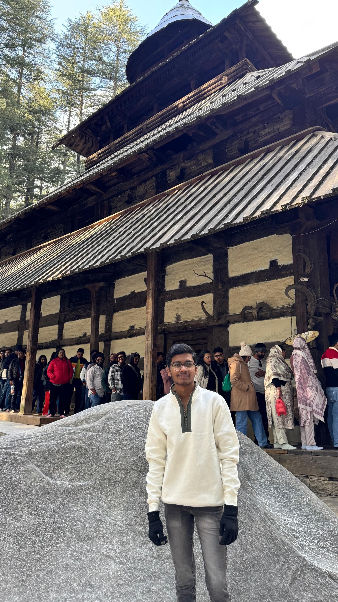

Vaibhav Goud

Summary
I am a hardworking and passionate student interested in Software development.A quick learner who is always eager to solve problems and expand my technical skills. Enthusiastic about coding and building efficient solutions.
Education
-
NIT Warangal (2022-2026)
-
Narayana Junior college (2020-2022)
-
Vignan's PPN (2016-2020)
Work Experience
Summer internship at National Institute of Technology,Warangal
May 2024 - Jul 2024
- Researched Host Defense Peptides (HDPs) and their therapeutic potential in treating diabetic foot ulcers
- Utilized Discovery Studio and molecular modeling tools to enhance protein-ligand interaction accuracy for
improved docking studies.
Skills
- Soft skills
- Time Management
- Problem solving and computer programming
- Communication
- Work Management
- Hard skills
- DSA in C++
- Python
- HTML
- CSS
- Discovery studio visualizer-Docking
Achievements
- Co Curricular Activities Captain (2019)
- Vignan's Super 6 Merit Scholarship (2016-2020)
- JEE Mains-95%ile (2022)
Others